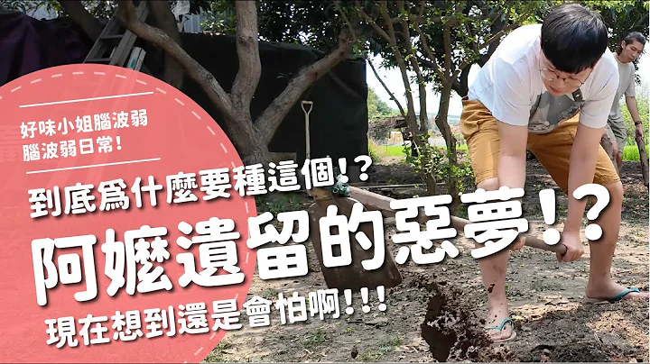

【綜口味】30歲後才能懂得人生道理#綜口味開房間 EP.781
綜口味娛樂
觀看次數：7.7萬次。21 小時前

比你海董你的心 影后 戲裡戲外都沒在休息的演員｜這群人...
不囉嗦看董仔
觀看次數：1.4萬次。1 天前
#貓用品開箱【鳥鳥逗貓棒讓阿瑪動了｜鬍鬚收集盒｜韓國貓...
志銘與狸貓
觀看次數：2.3萬次。1 天前
怎麼連專訪都含淚啊💦 #亞莉安娜 ＆ #辛西婭 被 #那那大...
POPCORN MOVIES TW
觀看次數：7.7萬次。21 小時前
【金馬61】主持人開場表演-劉冠廷｜｜MyVideo金馬線上直播
MyVideo影音隨看
觀看次數：1.7萬次。2 小時前
寶可夢抽卡風水寶地！在這第一抽就中⭐⭐⭐ / HowFun
How Fun
觀看次數：1.4萬次。5 小時前


阿嬤遺留的惡夢！？到底為什麼要種這個！？現在想到還是會怕啊！
好味小姐腦波弱
觀看次數：91萬次。5 個月前
Pokémon知識賽開跑! 你是寶可夢大師嗎? ft. 環島幫
阿滴英文
觀看次數：14萬次。2 天前
【菜喳】關於這隻貓的一些Q&A還買了些玩具和抽獎
菜喳
觀看次數：1.7萬次。5 小時前
Lulu雜貨店快閃市集擺攤，竟遭好友趁火打劫？不可能「文青」...
Lulu黃路梓茵
觀看次數：13萬次。3 年前
哇賽真的找到了！！感謝各位長久的支持～我們要退休啦哈哈哈！...
好味小姐腦波弱
觀看次數：58萬次。3 週前
【孫女訪問中】冷門車站街訪：嶺腳說他們才是山藥之王？與沒買...
普通女子 孫女
觀看次數：34萬次。3 年前